Give a high-level overview of what you implemented in this project. Think about what you've built as a whole. Share your thoughts on what interesting things you've learned from completing the project.
We implemented a rasterizer for images that converts shapes into real images. We also worked on improving the quality of these images using various techniques such as antialiasing by super sampling and forms of texture mapping. It’s fascinating how the same methods can apply to different concepts such as coordinates, colors, and texture.
Here is an example 2x2 gridlike structure using an HTML table. Each tr is a row and each td is a column in that row. You might find this useful for framing and showing your result images in an organized fashion.
We rasterized triangles by creating a box around each triangle using the (x, y) coordinates. We created a box because that gave us a limited number of locations where a pixel could be placed. The box is created using the min and max values of the coordinates. Using the Three Line Test, we were able to determine whether or not a pixel is inside the triangle or outside. If the pixel is inside the triangle, we fill it using the method fillPixel(). Otherwise, we do not fill the pixel. Our algorithm is no worse than one that checks each sample within the bounding box of the triangle because we are looking at all of the coordinates within the max and min range of the box and then if there is a triangle, we fill pixel.
Extra Credit: We created a bounding box around the triangle and added the inside_triangle boolean variable which allows for early breaking out. Essentially, when one point is inside the triangle but some point with the same x-value is outside the triangle, then you know that all points with the same x-value and greater y-value will also be outside the triangle so you can break early. This works because you are scanning the bounding box left to right bottom to up (ascending order). Below you can see the improved time between the unoptimized and optimized code:
UNOPTIMIZED ./draw ../../../svg/basic/test5.svg
Time to rasterize: 0.0012783 Time to rasterize: 0.0014003 Time to rasterize: 0.0005458 Time to rasterize: 0.0004231 Time to rasterize: 0.0002892 Time to rasterize: 0.0003869
OPTIMIZED ./draw ../../../svg/basic/test5.svg
Time to rasterize: 0.0004001 Time to rasterize: 0.0009323 Time to rasterize: 0.0004881 Time to rasterize: 0.0001918 Time to rasterize: 0.0001208 Time to rasterize: 0.0001471
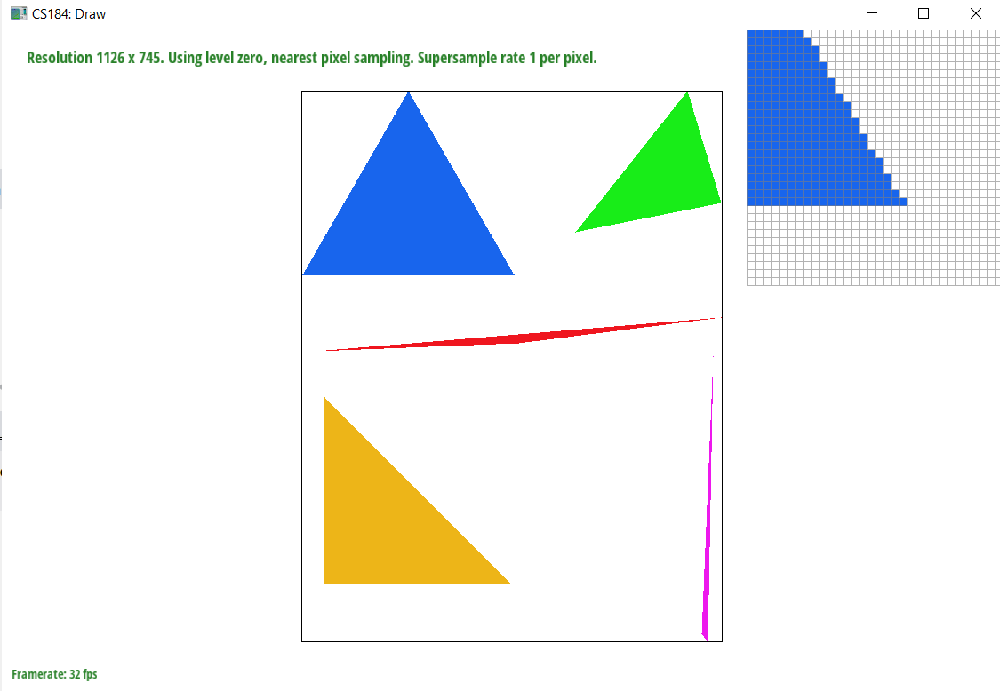The purpose of supersampling is to antialias our triangles. The reason why supersampling is useful is because it eliminates jaggies, or images with poor pixel quality and jagged edges. Supersampling essentially samples a larger frequency of pixels within the same area and then averages down each triangle to get a blurred effect. We made modifications to the rasterization pipeline which accounts for the sample rate. Within the image, we look at each pixel and divide them into more pixels depending on the size of sample rate. We then use the point-in-triangle test to determine whether or not those pixels are in the bounds of our image. If the pixels are within our range, we find the average of their color values using the center of the pixels. This makes the edge smoother than the jaggies we had before.
Extra Credit: We implemented random sampling as an alternative antialiasing method. Random sampling involved adding some random value to x and y for our floats xf and yf rather than using increment.
|
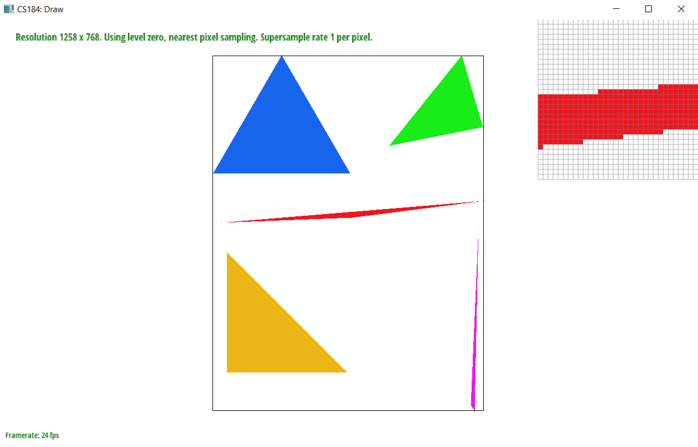
|
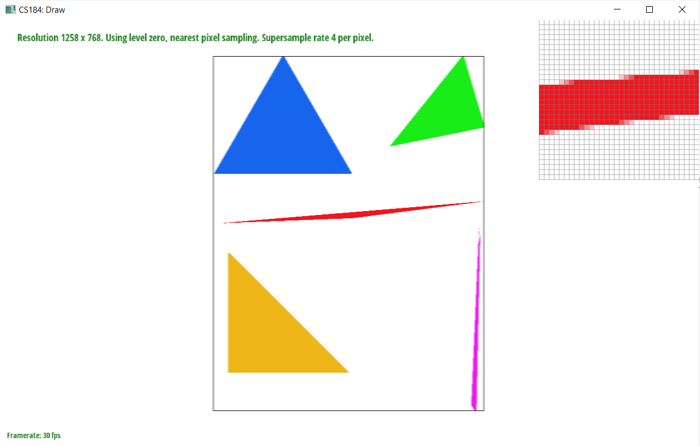
|
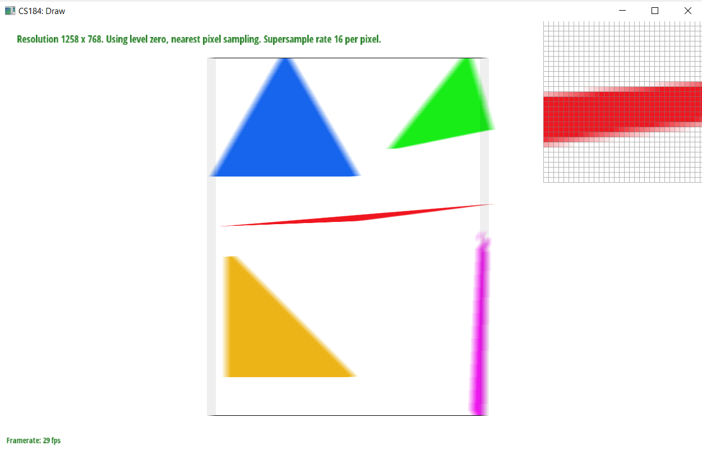
|
We added arms to our robot so that the robot is flexing its arms. We used rotation and translation to add 2 sections of arms on each side of the robot’s body. We also changed the colors to show some differentiation.
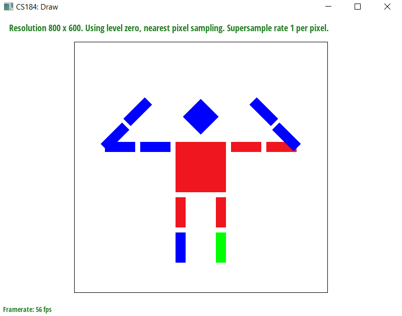We used barycentric coordinates to interpolate colors among vertices of a triangle. Barycentric coordinates are a coordinate system in which the points are in reference to the simplex. In this case, that would be the center of a triangle. Interpolation is useful for texture coordinates, colors, normal vectors etc. We can achieve interpolation through barycentric coordinates which is what we did in this task. We take the three color vertices of a triangle find the weighted average of them in order to smoothly blend the colors. We find the alpha, beta, and gamma color weights and use the line equations to do that.
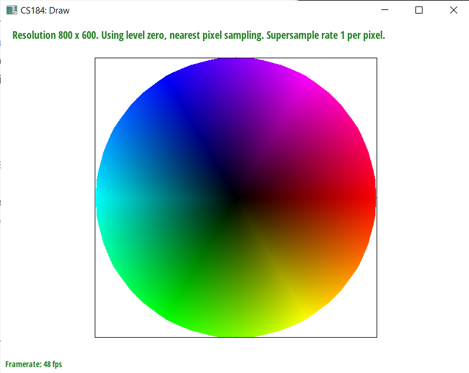In Task 5, we use pixel sampling to get the corresponding color of a function at some sample point in its texture space. We implemented it using two different methods: sample_nearest and sample_bilinear. We first find the weights alpha, beta, and gamma from our barycentric coordinates and apply them to the uv coordinates. We use a sample point for the entire process. To implement sample_nearest, we select the color value of the nearest texel to the uv coordinate using get_texel. To implement sample_bilinear, we take 4 sample locations and find the weighted average of their color values. Both nearest and bilinear sampling methods are different in that nearest sampling provides more aliasing affects which come from magnification and minification. Another general difference between the 2 methods is that since bilinear sampling requires more computation, it will also require more time than nearest sampling. So, in a case where speed is more important than accuracy, one may choose to use nearest sampling. There will be a large difference between the two methods when we sample pixels near thin lines because sample_nearest will look at the nearest pixel which could be a different color whereas sample_bilinear will find an average of the 4 closest colors.
As you can see in our images below, the colors of the images using bilinear sampling and nearest pixel sampling are different. Bilinear sampling is averaging the colors which is why the image is more green than blue. On the other hand, nearest sampling is looking at the closest color (in the ocean area) which is why it is more blue. However, the edges for bilinear sampling are more defined than in nearest pixel sampling. The edges in nearest pixel sampling have a greater blurred effect.
|
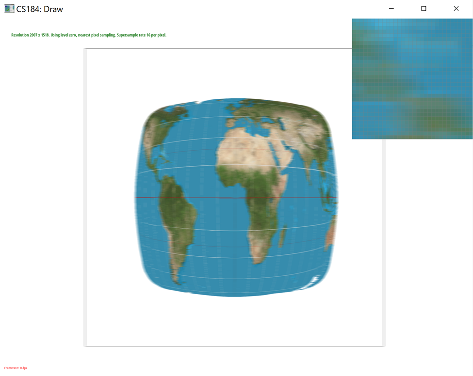
|
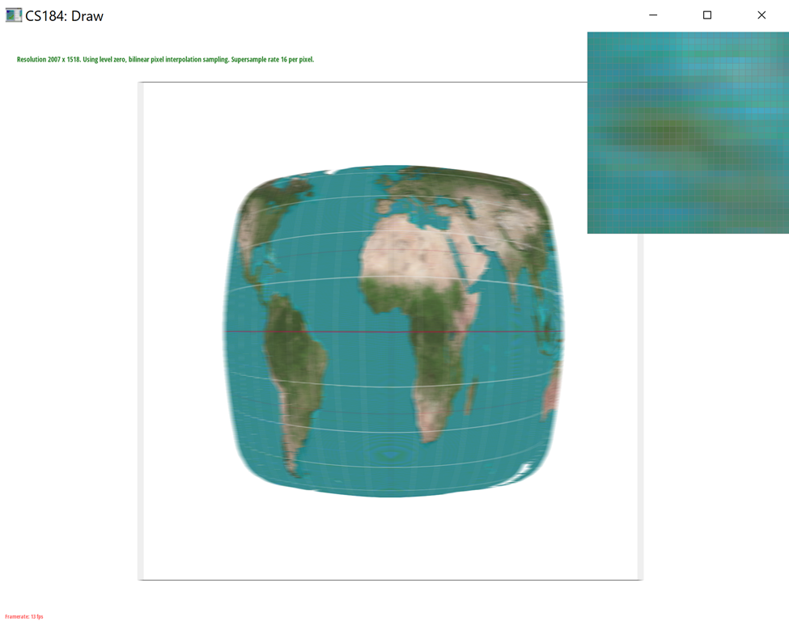
|
|
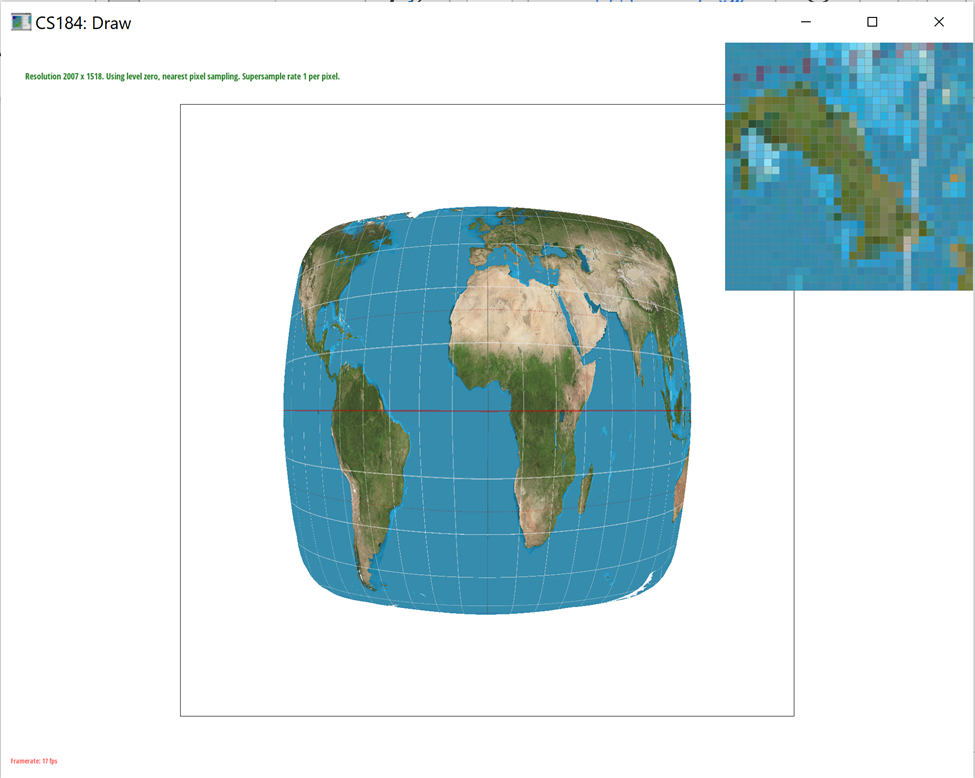
|
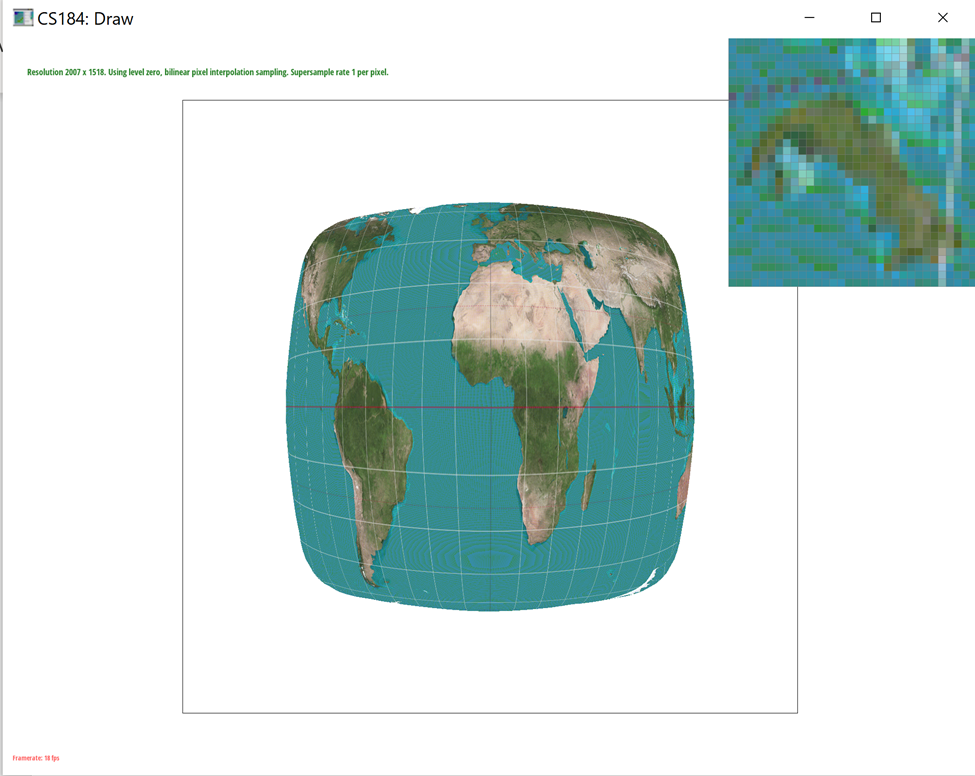
|
Level sampling is when we sample from different levels of a mipmap, which is essentially a factor smaller than the original image. We can think of a mipmap as a zoomed in version of the original image with each level being smaller by a factor of 2. We conditioned on L_ZERO, L_NEAREST, and L_LINEAR for computing the zero-th, nearest, and linear mipmap levels respectively. We then created a helper function called get_level which calculates the correct level based on the barycentric coordinates of a triangle. Instead of using color like in previous parts, we use the texture coordinates of the triangle. We calculated the uv coordinates using the barycentric coordinates of (x, y+1) and (y, x+1) and then calculated the distance vectors between the points.
In this project, we implemented pixel sampling, level sampling, and the number of samples per pixel as various sampling techniques. While all of these methods work towards antialiasing the image and smooth out jaggies, there are some tradeoffs. Bilinear sampling requires more time than nearest sampling because more computation is required, but it also has the greatest antialiasing power. Increasing the sampling rate requires more memory because we are looping through the pixels’ sample_rate more times as we are using an increased number of divided pixels.
|
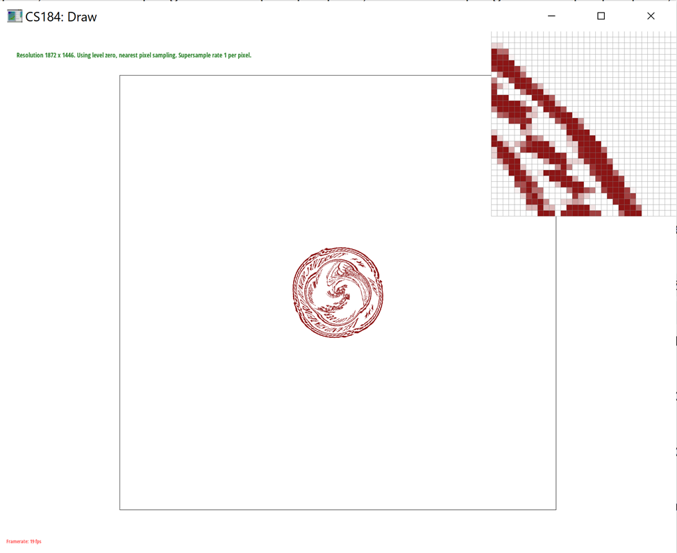
|
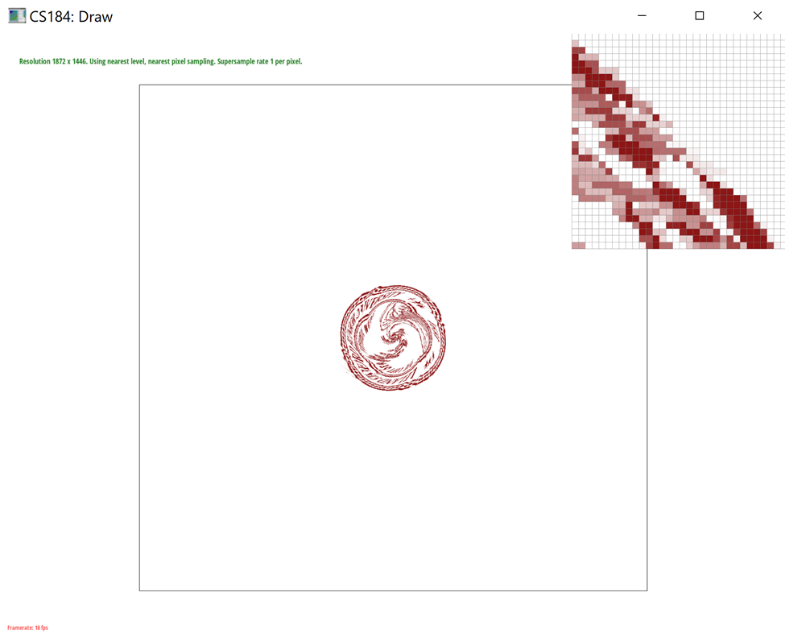
|
|
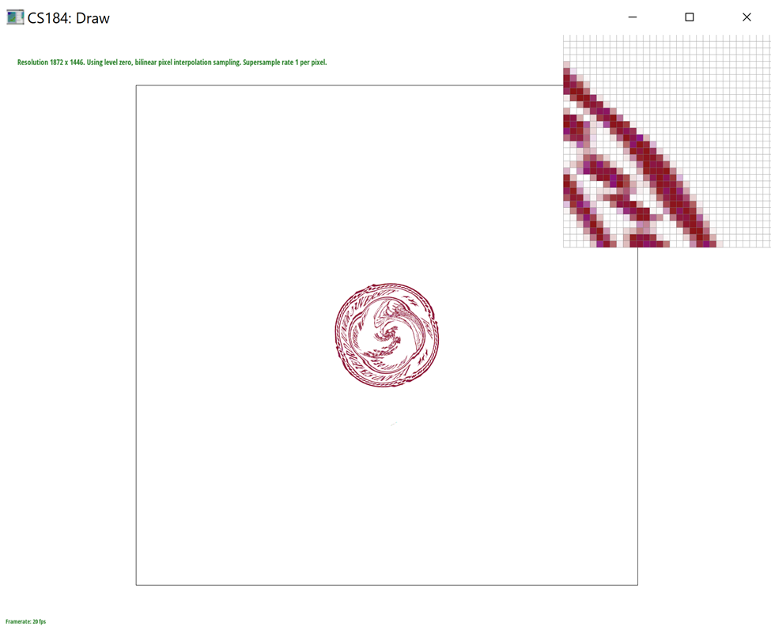
|
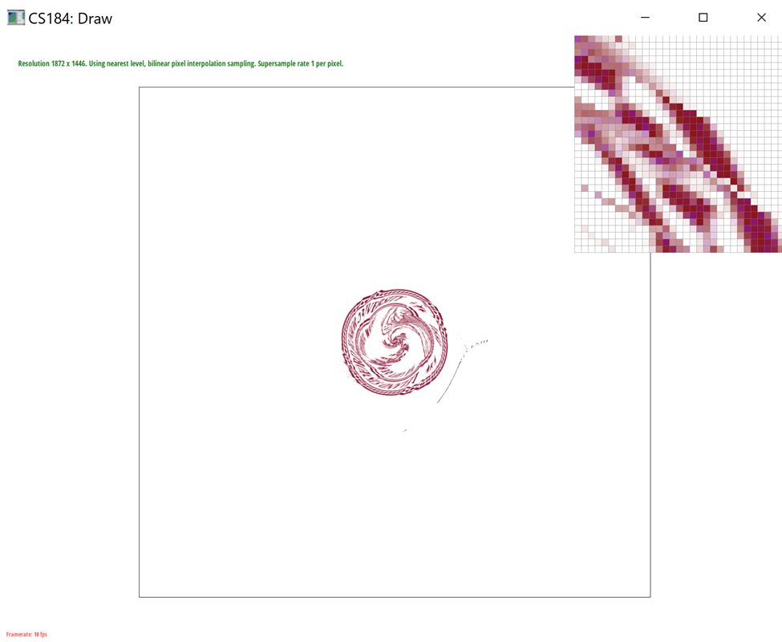
|
If you are not participating in the optional art competition, don't worry about this section!
Link to Webpage: https://cal-cs184-student.github.io/sp22-project-webpages-DavidWLin/proj1/index.html